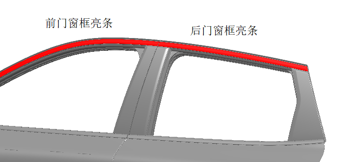
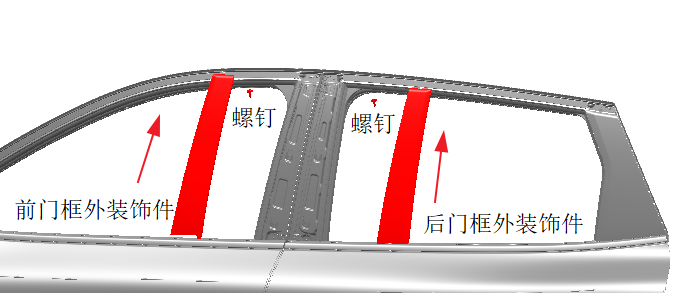
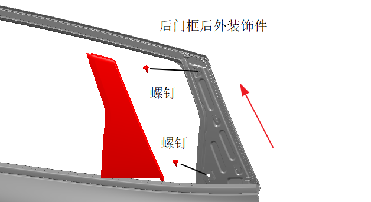

Демонтаж внешней декоративной панели рамки двери
Снять декоративные хромированные молдинги оконных проемов передней и задней дверей, см. Снятие и установка узла декоративного хромированного молдинга оконного проема боковины.

С помощью отвертки под внутренний шестигранник выкрутить 1 винт, сдвинуть элемент внешней декоративной панели рамки передней двери слева вверх в направлении стрелки для демонтажа элемента внешней декоративной панели рамки передней двери. Способ демонтажа с правой стороны аналогичен левой стороне.
С помощью отвертки под внутренний шестигранник выкрутить 1 винт, сдвинуть элемент внешней декоративной панели рамки задней двери слева вверх в направлении стрелки для демонтажа элемента внешней декоративной панели рамки задней двери. Способ демонтажа с правой стороны аналогичен левой стороне.

С помощью отвертки под внутренний шестигранник выкрутить 2 винта, сдвинуть элемент внешней декоративной панели рамки задней двери слева вверх в направлении стрелки для демонтажа заднего внешнего декоративного элемента рамки задней двери. Способ демонтажа с правой стороны аналогичен левой стороне.

Установка внешней декоративной панели рамки двери
Порядок Установка обратен порядку Снятие.